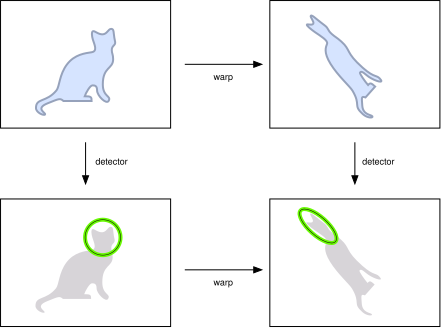
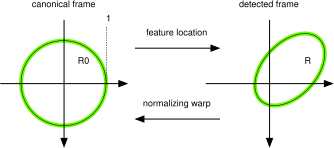
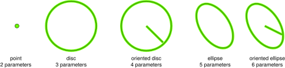
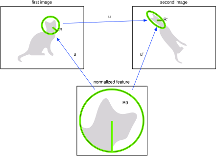

Table of Contents
This page describes the fundamental concepts required to understand a covariant feature detector, the geometry of covariant features, and the process of feature normalization.
Covariant detection
The purpose of a covariant detector is to extract from an image a set of local features in a manner which is consistent with spatial transformations of the image itself. For instance, a covariant detector that extracts interest points \(\bx_1,\dots,\bx_n\) from image \(\ell\) extracts the translated points \(\bx_1+T,\dots,\bx_n+T\) from the translated image \(\ell'(\bx) = \ell(\bx-T)\).
More in general, consider a image \(\ell\) and a transformed version \(\ell' = \ell \circ w^{-1}\) of it, as in the following figure:

The transformation or warp \(w : \real^2 \mapsto \real^2\) is a deformation of the image domain which may capture a change of camera viewpoint or similar imaging factor. Examples of warps typically considered are translations, scaling, rotations, and general affine transformations; however, in \(w\) could be another type of continuous and invertible transformation.
Given an image \(\ell\), a detector selects features \(R_1,\dots,R_n\) (one such features is shown in the example as a green circle). The detector is said to be covariant with the warps \(w\) if it extracts the transformed features \(w[R_1],\dots, w[R_n]\) from the transformed image \(w[\ell]\). Intuitively, this means that the “same features” are extracted in both cases up to the transformation \(w\). This property is described more formally in Principles of covariant detection.
Covariance is a key property of local feature detectors as it allows extracting corresponding features from two or more images, making it possible to match them in a meaningful way.
The covdet.h module in VLFeat implements an array of feature detection algorithm that have are covariant to different classes of transformations.
Feature geometry and feature frames
As we have seen, local features are subject to image transformations, and they apply a fundamental role in matching and normalizing images. To operates effectively with local features is therefore necessary to understand their geometry.
The geometry of a local feature is captured by a feature frame \(R\). In VLFeat, depending on the specific detector, the frame can be either a point, a disc, an ellipse, an oriented disc, or an oriented ellipse.
A frame captures both the extent of the local features, useful to know which portions of two images are put in correspondence, as well their shape. The latter can be used to associate to diagnose the transformation that affects a feature and remove it through the process of normalization.
More precisely, in covariant detection feature frames are constructed to be compatible with a certain class of transformations. For example, circles are compatible with similarity transformations as they are closed under them. Likewise, ellipses are compatible with affine transformations.
Beyond this closure property, the key idea here is that all feature occurrences can be seen as transformed versions of a base or canonical feature. For example, all discs \(R\) can be obtained by applying a similarity transformation to the unit disc \(\bar R\) centered at the origin. \(\bar R\) is an example of canonical frame as any other disc can be written as \(R = w[\bar R]\) for a suitable similarity \(w\).

The equation \(R = w[\bar R_0]\) matching the canonical and detected feature frames establishes a constraint on the warp \(w\), very similar to the way two reference frames in geometry establish a transformation between spaces. The transformation \(w\) can be thought as a the pose** of the detected feature, a generalization of its location.
In the case of discs and similarity transformations, the equation \(R = w[\bar R_0]\) fixes \(w\) up to a residual rotation. This can be addressed by considering oriented discs instead. An oriented disc is a disc with a radius highlighted to represent the feature orientation.
While discs are appropriate for similarity transformations, they are not closed under general affine transformations. In this case, one should consider the more general class of (oriented) ellipses. The following image illustrates the five types of feature frames used in VLFeat:

Note that these frames are described respectively by 2, 3, 4, 5 and 6 parameters. The most general type are the oriented ellipses, which can be used to represent all the other frame types as well.
Transforming feature frames
Consider a warp \(w\) mapping image \(\ell\) into image \(\ell'\) as in the figure below. A feature \(R\) in the first image co-variantly transform into a feature \(R'=w[R]\) in the second image:

The poses \(u,u'\) of \(R=u[R_0]\) and \(R' = u'[R_0]\) are then related by the simple expression:
\[ u' = w \circ u. \]
Normalizing feature frames
In the example above, the poses \(u\) and \(u'\) relate the two occurrences \(R\) and \(R'\) of the feature to its canonical version \(R_0\). If the pose \(u\) of the feature in image \(\ell\) is known, the canonical feature appearance can be computed by un-warping it:
\[ \ell_0 = u^{-1}[\ell] = \ell \circ u. \]
This process is known as normalization and is the key in the computation of invariant feature descriptors as well as in the construction of most co-variant detectors.